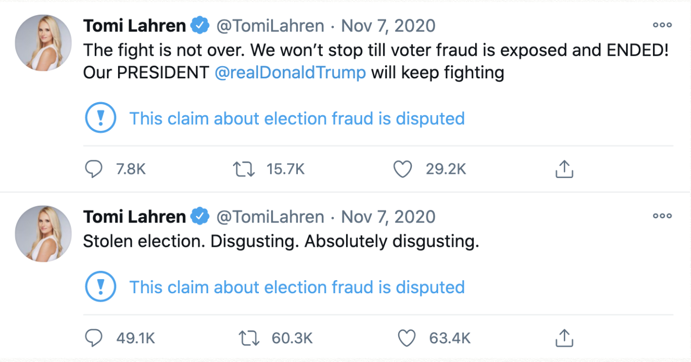

Figure 1: These are two of Tomi Lahren's flagged Tweets about voter fraud.
The spread of misinformation among social networks is a critical problem facing societies today. The world has faced rapid and widespread dissemination of misinformation through social networks. Specifically, users on Twitter and Facebook have sewn fear and mistrust regarding the US election process by spreading false information about the voting process. As well, after the election, doubt was further spread about the validity of the election based on incorrect and intentionally misleading information. With the threat that misinformation poses to societies, social networks, doubtlessly encouraged by public dismay, has sought to find ways to rein in the spread and prevalence of misinformation within their networks. Twitter in particular has developed a method of flagging tweets that contain potential misinformation as a way to inform users of the malicious content while deterring its continued spread.There is a need to understand the effects these systems are having in order to improve upon them. Specifically, are different types of users interacting with flagged tweets compared to unflagged tweets? By exploring this question, more work can be done to focus on especially vulnerable groups when designing misinformation prevention systems.
By defining a process for quantitatively understanding a user along three dimensions: science (pro-science vs anti-science), political (conservative vs liberal), and moderacy (hardline vs moderate), we perform an analysis to understand the characteristics of the community of users that interact with flagged tweets versus unflagged tweets.We combine two concepts of defining a user's polarity to give us a comprehensive three dimensional polarity score. We then conduct an analysis on the differences and similarities of a community of users that interacted with unflagged tweets and a community that interacted with flagged tweets. We are then able to understand how misinformation flags change the makeup of the users who interact with flagged tweets. In Echo Chambers Surrounding Misinformation on Twitter, researchers developed a methodology for calculating a users polarization, i.e. whether they tend to like misinformation [3]. This concept of polarity allowed the researchers to analyze echo chambers surrounding COVID-19 misinformation. In our work we adopt the use of a hashtag analysis that these researchers defined in order to give our users a three dimensional polarity score, an idea designed by Rao et al. in Political Partisanship and Anti-Science Attitudes in Online Discussions about Covid-19. While Rao et al. use more sophisticated techniques in order to define polarities, we adopt their three dimensional polarity score along with the hashtag analysis approach used in Echo Chambers Surrounding Misinformation on Twitter. Generally, we use an analysis of hashtags to define a users attitudes, rather than a more intensive, yet more lengthy, process of a text analysis on a users tweet content. We find that our approach works well and some results are able to be confirmed intuitively. Using these three dimensional polarity scores, we then conduct our analysis regarding the change of community characteristics between flagged tweets and unflagged tweets.